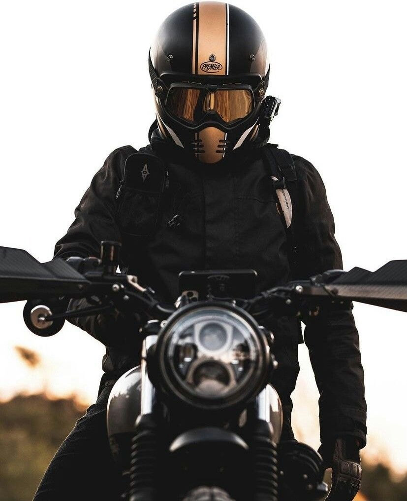
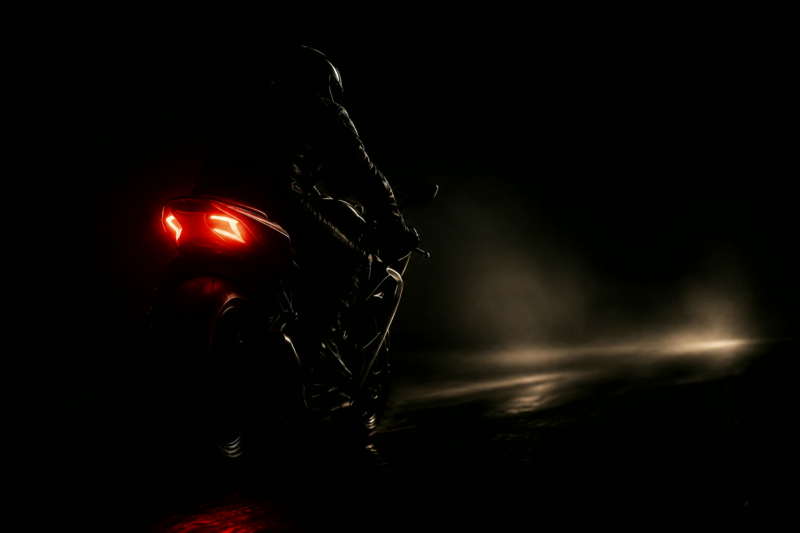
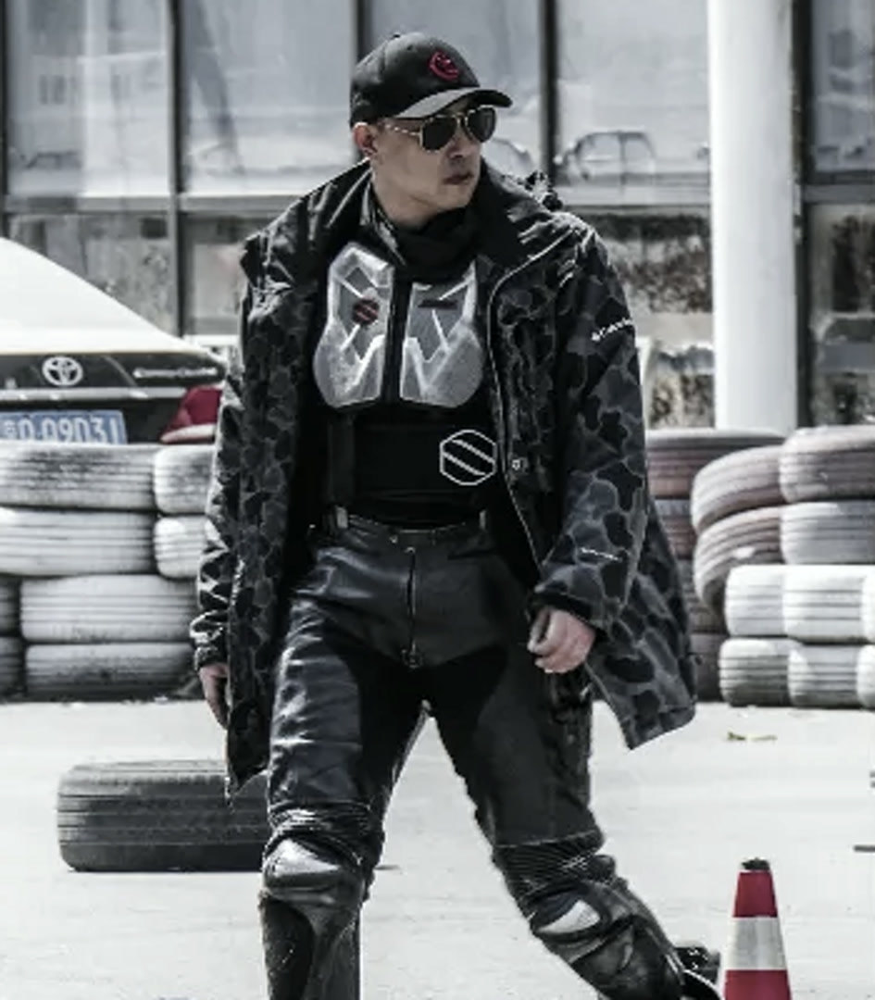

“很多人骑了很多年车，但他并不知道什么叫会骑摩托车”
RoadCraft Code
骑行法则
Controlled Force
被控制的力量
以判断约束速度，以秩序释放力量。
重心、姿态和路线选择，把基础动作练到稳定习惯。
发现错误，思考问题，改正纠偏。
Rider Geometry
人车几何
视线、核心、双腿和手部，构成车辆转向前的身体坐标。

Control Discipline
动作纪律
纪律不是口号，是每次上车前、进弯前、出弯前都能重复执行的动作顺序。
01
出发前检查
头盔安全扣、上车捏离合、车辆状态和训练心态，先于所有动作。
- 捏离合上车，防止冲车。
- 扣具闭合，头盔防护才完整。
- 不骑“最后一圈”。
02
人车一体
核心与双腿先稳定，手部才不会把紧张传给车辆。
- 收紧核心，夹紧双腿。
- 加速、减速、停车，都要保持核心收紧。
- 左手放松，右手油门稳定。
- 车身正直时清晰使用前刹。
03
看向出口
视线决定方向，路线承接重心，后刹服务弯中稳定。
- 不要盯车头或障碍。
- 弯道采用“大进小出”。
- 过弯时下巴压向弯道侧车把，重心更快进入弯线。
- 过弯轻踩后刹，出弯补油。
Training Trace
训练轨迹
训练不是多跑几圈，而是每一圈带着问题回来，再带着目标出去。发现错误，思考原因，下一圈有意识地纠偏。

Lesson 1
重心、油离、惯性与基础转弯
第一节课先把车、人和动作关系拉清楚：扶得住车，起得了步，收得住惯性，转得进路线。
01
扶车
建立车辆重心感，理解核心发力与扶车支点。
02
坡起
控制离合、油门与车身移动之间的节奏。
03
惯性
加速收核心，收油直腰，建立送油门接刹车的习惯。
04
转弯
用视线、重心、后刹和补油形成连续动作。
Review 0630
核心、停车与弯中重心
复习课把基础动作再压实：速度变化时身体先稳住，停车前先安排重心，弯中用头和肩带动车身进入路线。
01
速度变化
加速、减速和停车都要收紧核心，让惯性先被身体接住。
02
停车重心
停车前提前出左脚，核心收紧，重心向左压住，避免车辆向右倒。
03
弯中路线
下巴向弯道侧车把压重心，出弯贴近弯心，让车辆更快完成转向。
Lesson 2
小半径掉头
小半径不是靠硬倒车身，而是用核心、腿、舵面、后刹和视线顺序，把车带进更小的转弯半径。
01
身体稳定
收紧核心，夹紧双腿，先把人固定在车上。
02
舵面转向
更多利用车把舵面完成转向，不依赖过多车身倾倒。
03
后刹节奏
后刹逐渐加深，过弯心后逐步松开，让车辆保持可控张力。
04
先倒后刹
转头送肩，让车先倾倒再踩刹；先踩刹会让车身稳定，反而倒不下去。
Ride Log
训练记录
训练影像默认作为个人复盘资料私密留存，公开页面只记录训练主题、动作要点和后续纠偏方向。
Course Files
课程档案
Lesson 1
重心 / 油离 / 转弯
已记录
Lesson 2
小半径掉头
已记录
Lesson 3
待记录
Lesson 4
待记录
Lesson 5
待记录
Lesson 6
待记录
Lesson 7
待记录
Lesson 8
待记录

The Instructor
老罗 RoadCraft
冠军教练、认证教练员，专注安全驾驶、低速控车、路线意识和私教训练。课程强调理解车辆、控制车辆，并始终敬畏风险。
认证背景
北汽摩协认证教练员，摩安骑行学院教学负责人。
赛事经验
金卡纳赛事冠军指导教练、赛事主裁等经历。
课程价值
建立安全驾驶意识，掌握可练习、可复盘的控车细节。